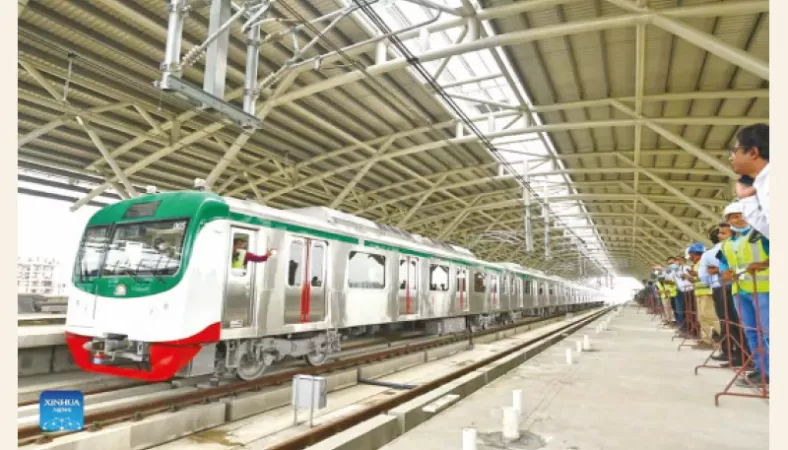

A metro rail is a high-speed elevated railway that circles a city. It saves time and money for big city dwellers. Currently, the Bangladesh government launches Metro Rail to reduce traffic Jams in Dhaka.
When this project, called Mass Rapid Transit (MRT), is completed, it will be able to carry 60,000 passengers per hour and 500,000 daily.
Here is a bunch of short and long paragraphs on Dhaka Metro Rail for students, including: Dhaka Metro Rail Paragraph 100 Words, Dhaka Metro Rail Paragraph 150 Words, Dhaka Metro Rail Paragraph 200 Words, Dhaka Metro Rail Paragraph 250 Words, Dhaka Metro Rail Paragraph 300 Words, and Dhaka Metro Rail Paragraph for SSC & HSC.